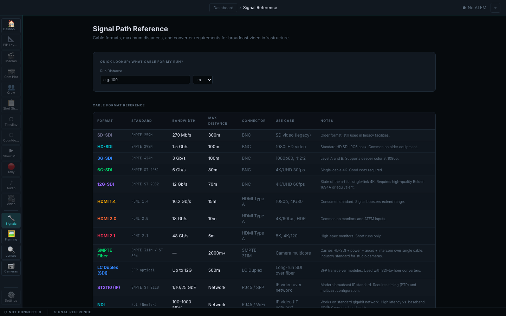

Job — get the run right the first time
Cable formats, distances and what they need at the far end
A signal path reference for broadcast video infrastructure, held next to the show rather than in a bookmark. Ask what will carry a run of a given length, and read the formats against their standard, bandwidth, maximum distance, connector and the situation each one is actually for.
- Quick lookup by run distance in metres or feet
- SD, HD, 3G, 6G and 12G SDI with their standards, bandwidths and distance limits
- HDMI 1.4, 2.0 and 2.1 with the short runs they are honestly good for
- Fibre, LC duplex, ST 2110 and NDI with their converter and network requirements
Boundary This is reference data shipped with the application. It does not measure, test or certify an installed cable run.

Reference, not measurement. Every row states its own limit — 12G-SDI at 70 m on high-grade coax, HDMI 2.1 honest about five metres, fibre where the distance genuinely needs it.